01 / 封面下载PNG ↓
1张封面＋13张正文图 · 1080 × 1440 PNG · 点击图片放大查看
对应研究v1.1；新增道琼斯与罗素1000/2000/3000。估值10月末与11/19分口径标注，历史只有年末点。
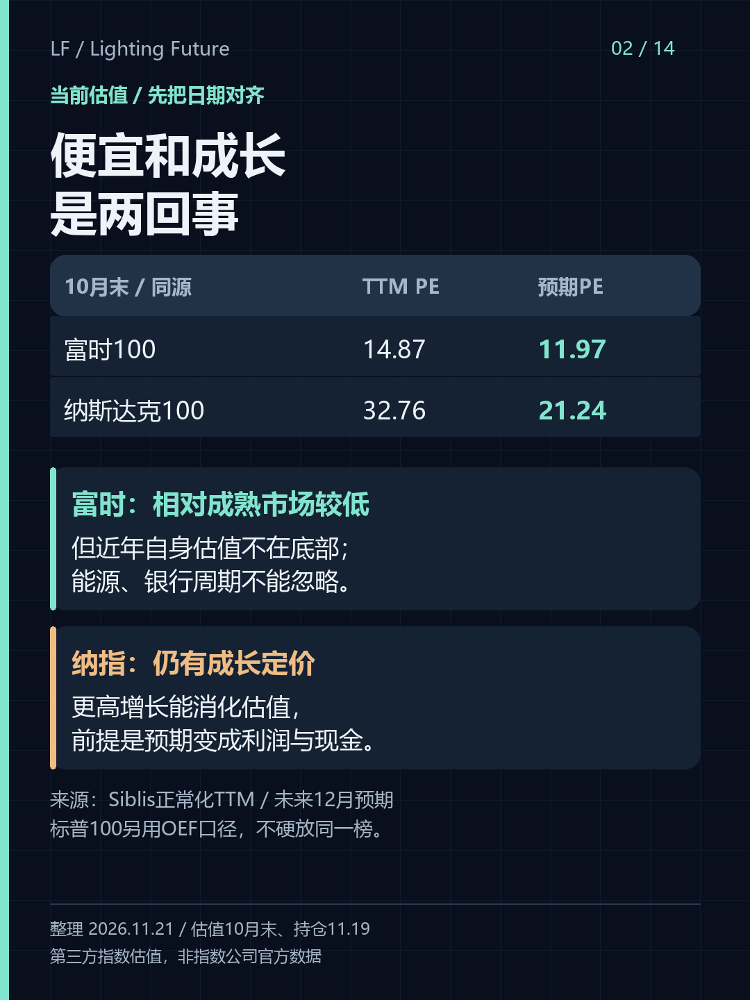
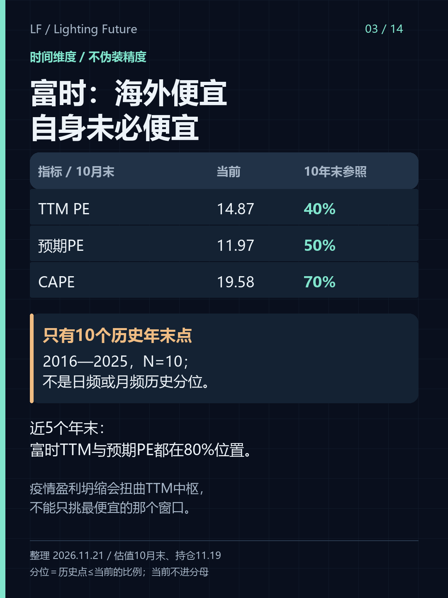
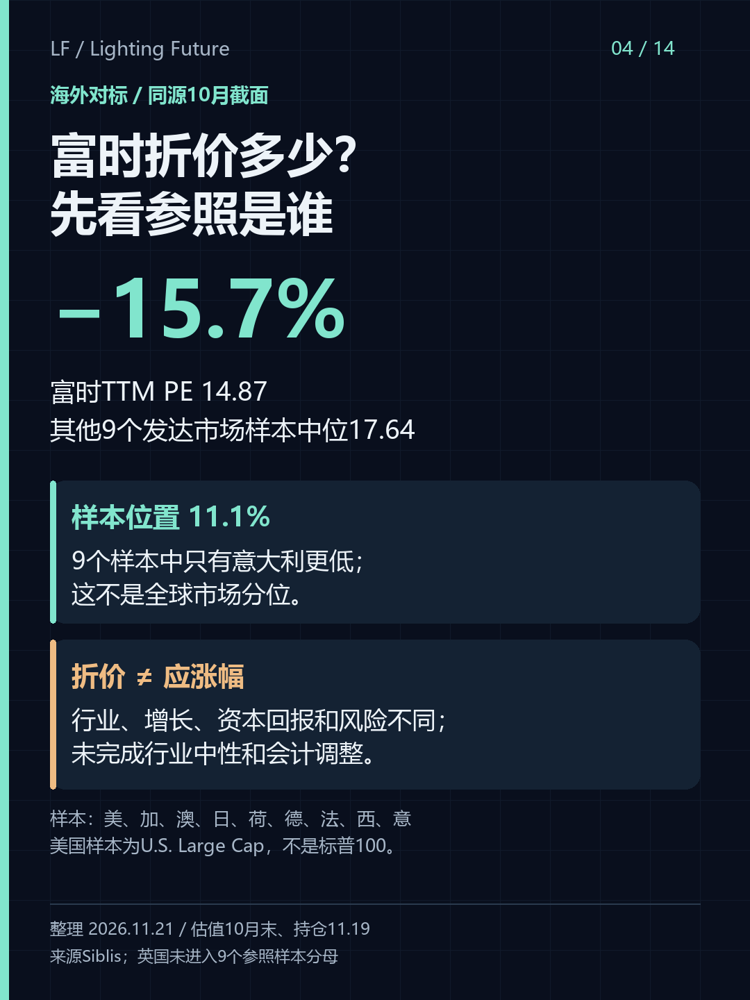
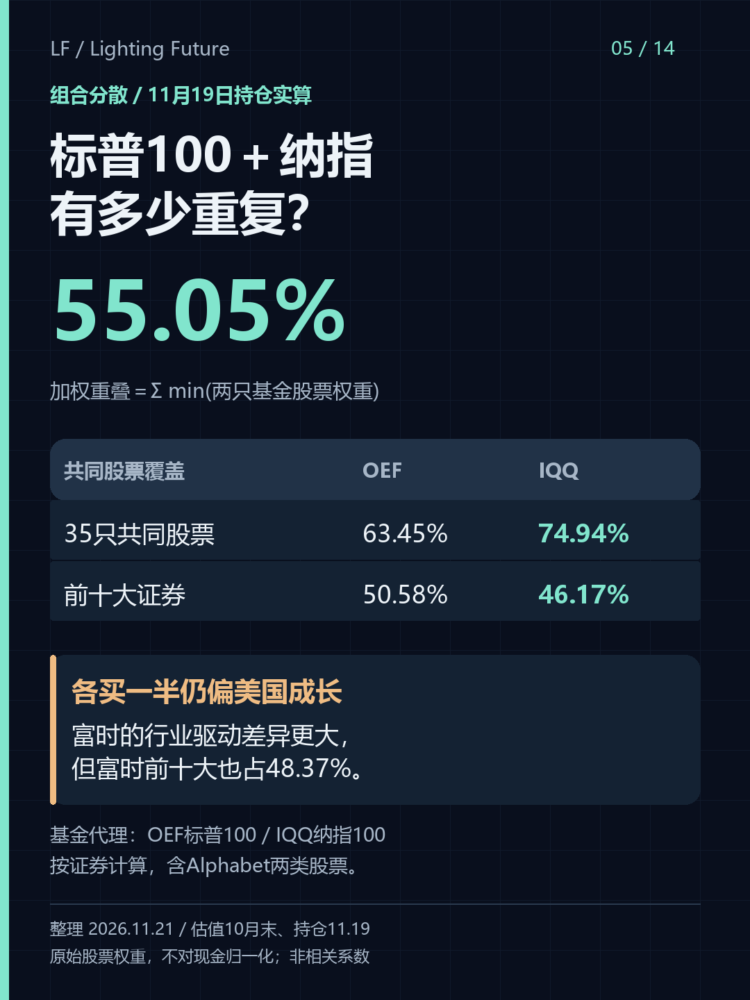
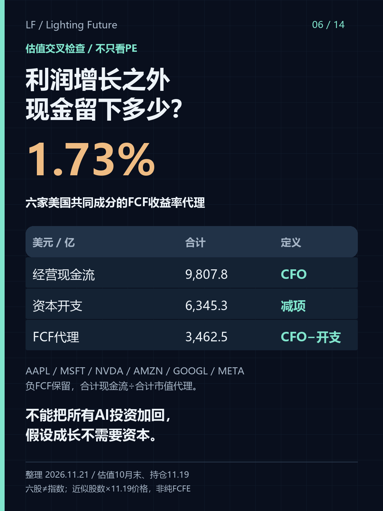
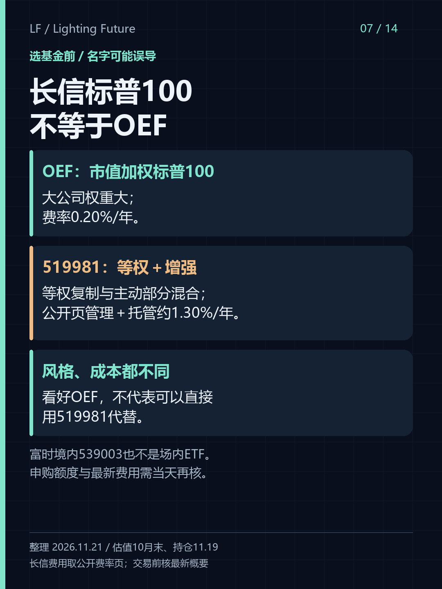
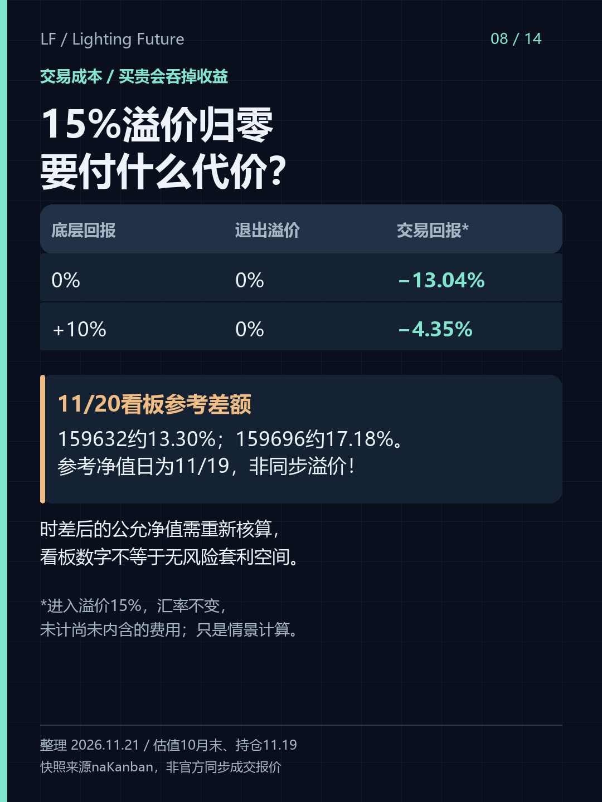
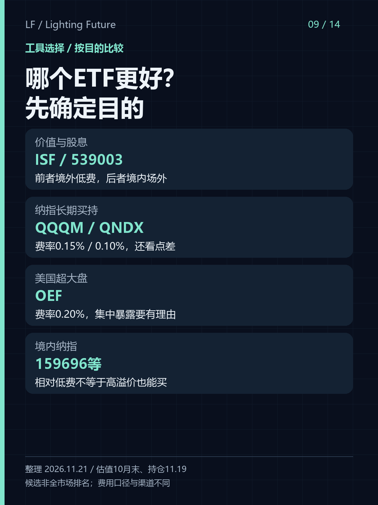
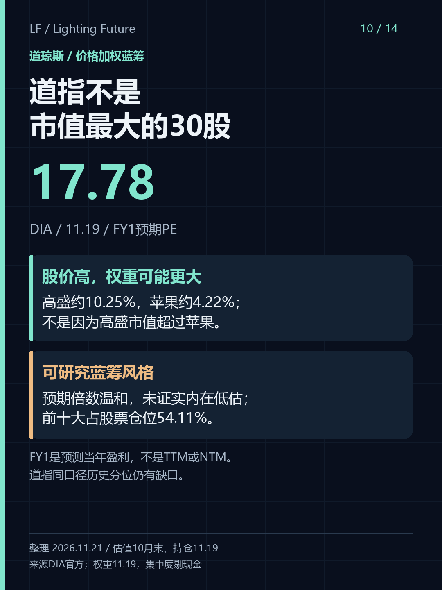
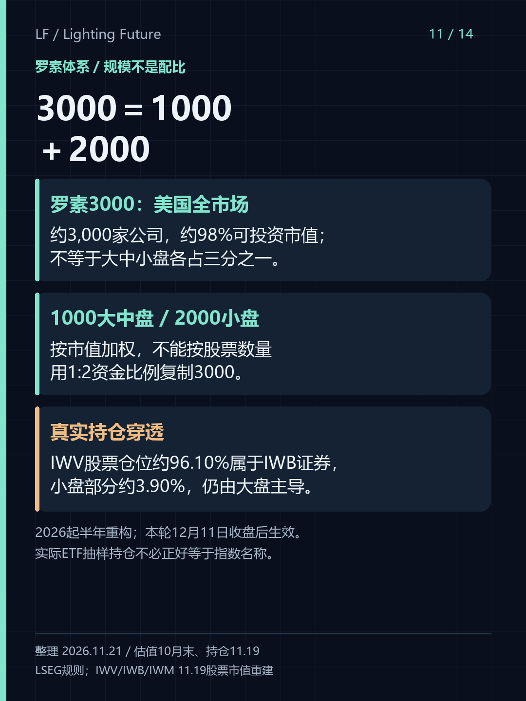
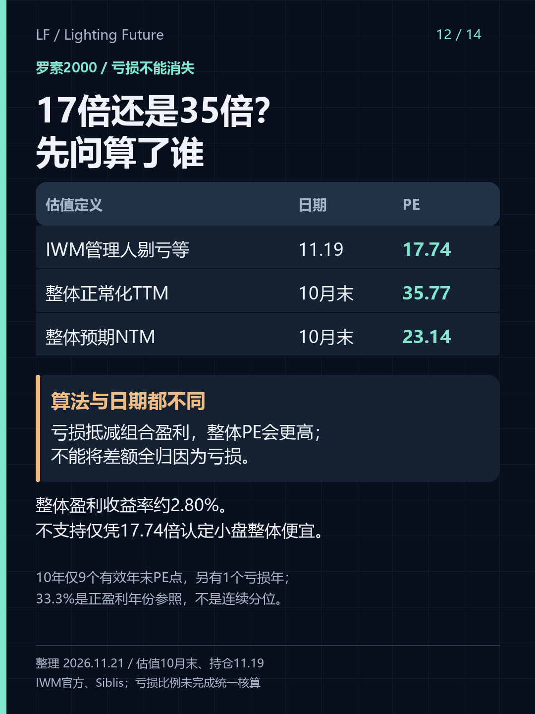
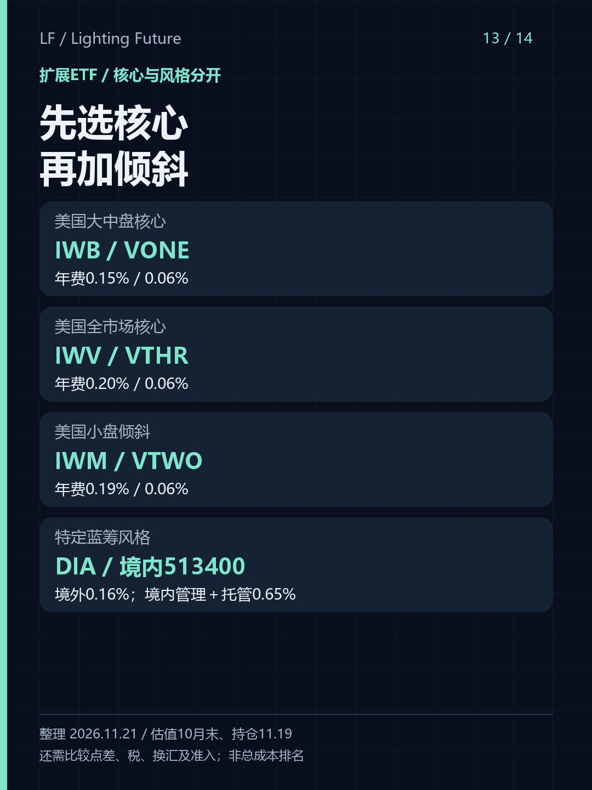
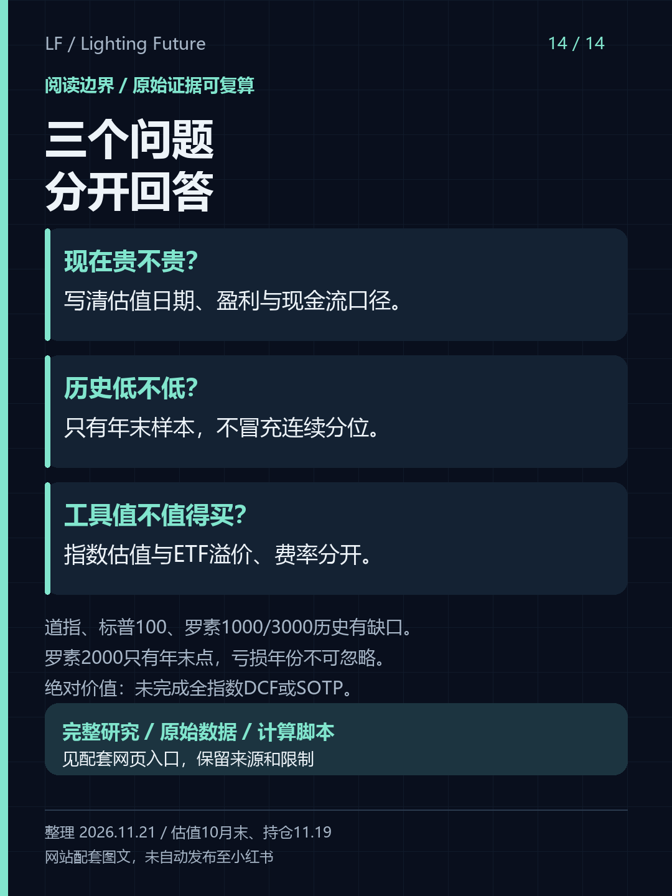
英美宽基这么多，该怎么选？ 这次把道琼斯、罗素1000/2000/3000补进了富时、标普和纳指研究。 ① 美国核心：先比较全市场与大中盘。 罗素3000≈1000大中盘＋2000小盘，但不能按股票数量配成1:2。11/19实际IWV股票仓位约96.10%属于IWB证券，小盘部分约3.90%，仍由大盘主导。 ② 道琼斯：30股价格加权蓝筹。 DIA 11/19 FY1预期PE17.78；高盛约10.25%、苹果约4.22%，不是按公司市值分权重。预期倍数温和，但未证实内在低估。 ③ 罗素2000：17倍不等于整体便宜。 IWM管理人11/19 PE17.74，有剔亏、封顶等处理；同源10月末整体正常化TTM PE35.77、预期23.14。日期和算法都不同，亏损抵减整体盈利，不能硬比。 ④ 富时：相对便宜，自身未必低位。 10月末正常化TTM PE14.87；较9个其他发达市场样本中位低15.7%，但自身近5个年末参照80%。 ⑤ 纳指：作为成长倾斜。 同源10月TTM PE32.76，仍需盈利和现金流兑现。标普100与纳指代理11/19净资产权重重叠55.05%，各买一半不等于充分分散。 工具候选：大中盘IWB/VONE；全市场IWV/VTHR；小盘IWM/VTWO；道指DIA或境内513400。VONE/VTHR/VTWO年费均0.06%，还要算点差、税和换汇。境内产品先核同步溢价，低费不抵消高溢价。 历史只有年末样本；道指、标普100、罗素1000/3000缺同口径连续历史。小盘10年另有亏损年，不能把正盈利年份分位当全历史。估值10月末/11月19日分口径标注，非实时行情。2026/11/21个人研究，非个性化建议。 #ETF研究 #道琼斯 #罗素2000 #美股宽基 #富时100 #纳斯达克100 #估值分析 #投资学习
未自动发布到小红书。年末样本不等于连续分位；9个跨市场参照不是全球分位。请保留图片脚注。